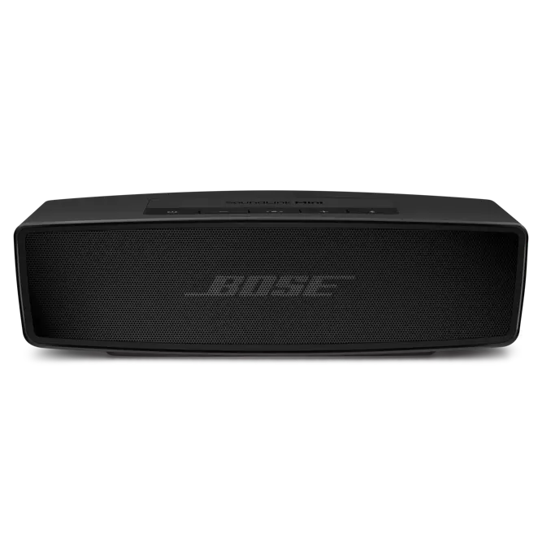
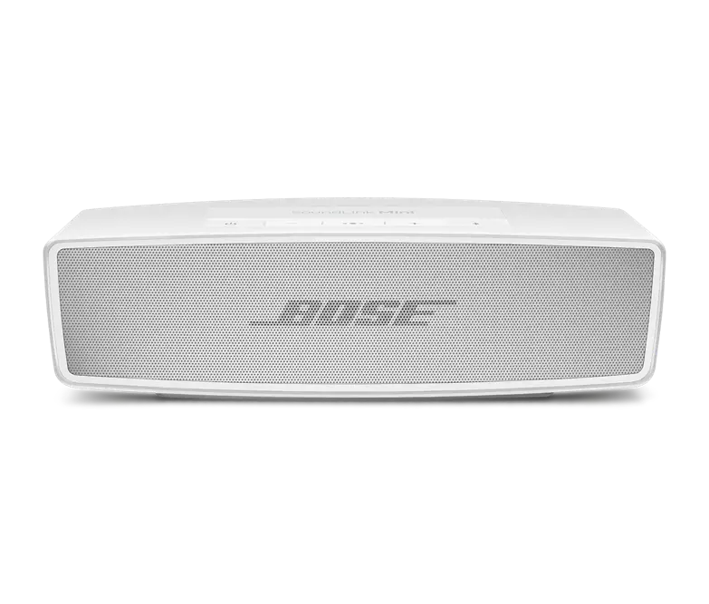

Speakers
Soundlink Mini II
The Bose SoundLink Mini II is a compact Bluetooth speaker that packs impressive audio performance into a small form factor. Known for its rich sound quality and sleek design, this speaker is perfect for on-the-go music lovers. The durable build, extended battery life, and intuitive controls make it a versatile companion for various occasions.
Color